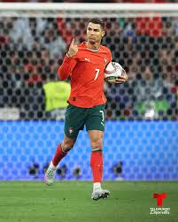

⚽ Fútbol
Lionel Messi

País: Argentina
Logros: Campeón del Mundo 2022, 8 Balones de Oro, 4 Champions League.
Destaca por: Su talento, visión de juego y goles.
Cristiano Ronaldo

País: Portugal
Logros: 5 Balones de Oro, 5 Champions League, Eurocopa 2016.
Destaca por: Su disciplina, físico y capacidad goleadora.
Paolo Guerrero

País: Perú
Logros: Máximo goleador histórico de Perú, títulos en Brasil.
Destaca por: Liderazgo y experiencia.